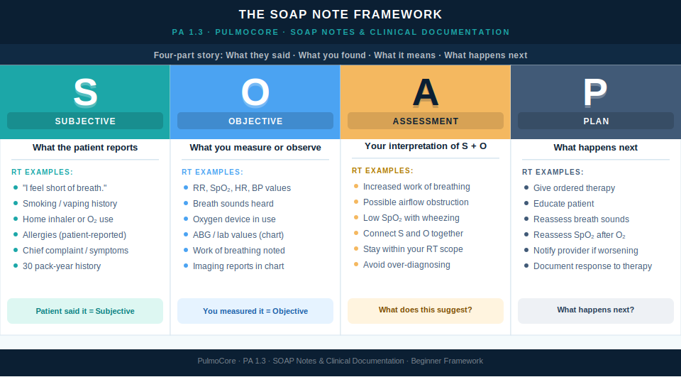
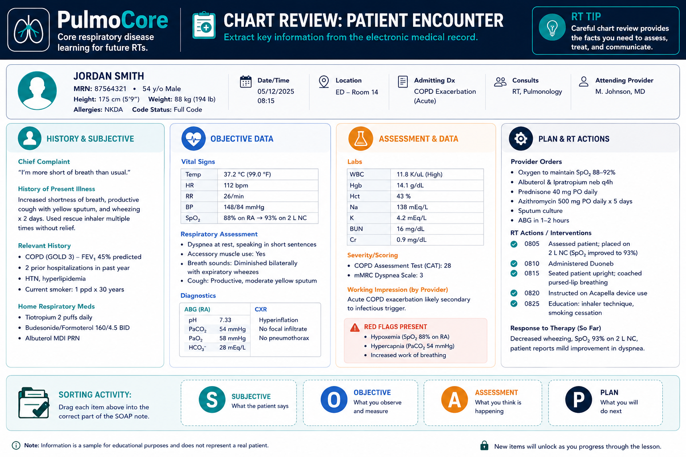
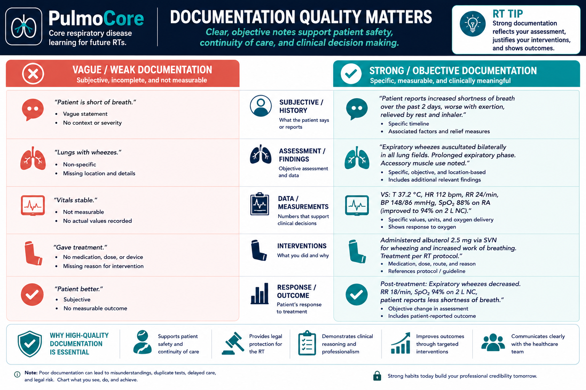

Quick Pre-Check
Which note is most useful to another RT?
Documentation is how respiratory therapists turn assessment findings into clear communication. In this lesson, you will learn how to separate subjective and objective data, organize findings into SOAP format, write useful respiratory notes, and practice before completing your assignment.
By the end of this lesson, learners should be able to explain the purpose of RT documentation, sort assessment data into SOAP categories, identify respiratory information from a chart, and write clear beginner-level respiratory documentation.
This placeholder is reserved for the short Lesson 1.3 overview video. The video should introduce SOAP notes, explain subjective vs objective data, and preview how RTs use documentation to communicate patient assessment findings.
Respiratory therapists document so the care team can understand what the patient reported, what the RT observed, what was done, how the patient responded, and what should happen next. Good documentation is part of safe patient care.
Which note is most useful to another RT?
SOAP is a simple way to organize clinical information. For beginners, think of it as a four-part story: what the patient says, what you find, what you think it means, and what you plan to do next.

| SOAP Part | Plain Language | Respiratory Example |
|---|---|---|
| Subjective | What the patient reports. | “I feel short of breath.” Smoking history. Home inhaler use. |
| Objective | What you measure, observe, or hear. | RR 28/min, SpO₂ 89%, wheezing, oxygen device. |
| Assessment | Your clinical interpretation of the findings. | Increased work of breathing with wheezing and low oxygen saturation. |
| Plan | What will happen next. | Give ordered therapy, educate patient, reassess response, notify provider if worsening. |
Before writing a full SOAP note, learners must be able to separate subjective and objective information. Subjective data comes from the patient or caregiver. Objective data comes from measurement, observation, testing, or assessment.
Choose whether each item belongs in Subjective or Objective data.
Before entering the room, RTs review the chart to identify important information and decide what needs to be verified with the patient. You are not expected to understand every detail yet. Start by locating respiratory clues.

For each chart item, select the best SOAP category.
The Assessment and Plan are often harder for beginners because they require interpretation. Start simple: state the respiratory concern you see, then state what should happen next and what must be reassessed.
Patient reports dyspnea. RR 30/min, SpO₂ 88% on room air, expiratory wheezes bilaterally. Which Assessment statement is most appropriate for a beginner RT note?
Good documentation does not need to be fancy. It needs to be accurate, objective, complete enough to support care, and clear enough that another clinician can understand what happened.

Classify each note as stronger or weaker documentation.
This practice area mirrors the assignment idea: take patient chart data and organize it into a SOAP note. This is not submitted from the lesson, but it helps you prepare.
Type short notes into each box. Then use the sample answer to compare your work.
This guided case reveals one stage at a time. Choose the best documentation decision to continue.
The patient says, “I feel short of breath when I walk to the bathroom.” Where does this belong?
You measure RR 30/min and SpO₂ 88% on room air. You hear expiratory wheezes.
Decision Question: What SOAP section should include these findings?
You need to document what these findings suggest.
Decision Question: Which Assessment statement is best?
The provider has an order for bronchodilator therapy and oxygen as needed.
Decision Question: Which Plan is best?
Answer each question to complete this activity.
Which item belongs in the Subjective section of a SOAP note?
Which documentation entry is most objective?
What should a respiratory therapy note include after treatment?
Which statement best describes the purpose of the Assessment section?
No. At this stage, the goal is to correctly organize data and write clearly. Your notes will become more detailed as your assessment skills grow.
The raw data should usually appear once in the best category. You may refer to findings again when interpreting them in the Assessment section.
RTs document findings, interpretation, response, and respiratory care. Avoid over-diagnosing beyond your role and available information.
Useful documentation is accurate, specific, objective when possible, and includes patient response and reassessment needs.
SOAP notes help RTs organize assessment findings and communicate respiratory care clearly. Strong documentation separates patient reports from measured findings, interprets respiratory concerns appropriately, and includes a plan for therapy and reassessment.
Click the card to flip it. Use Term → Definition or Definition → Term mode. Mark known cards to move them into the completed pile.